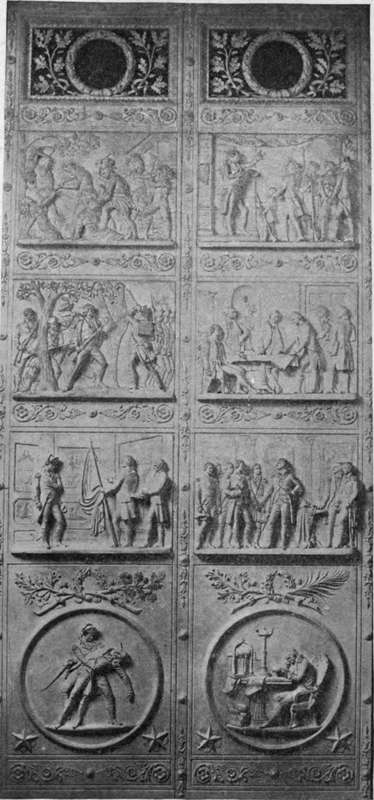

Proclamation Of Emancipation. Continued
Description
This section is from the book "The National Capitol. Its Architecture Art And History", by George C. Hazelton, Jr. Also available from Amazon: The National Capitol Its Architecture Art and History.
Proclamation Of Emancipation. Continued
It is not necessary to tell the story of the six months of incessant labor spent by the artist at the White House upon this work, nor to repeat the encomiums or criticisms of the press and public upon the painting during the days when it hung in the East Room, by the kind permission of the President, in order that the people might have an opportunity to see and enjoy it. The final view of the picture taken by the Executive and the artist together before the latter's farewell to his work at the Executive Mansion is characteristic of the great war-President in his relations to men in far diverging walks of life, and shows him in the new light of an art critic: " Turning to me," writes the artist, "President Lincoln said: 'Well, Carpenter, I must go in and take one more look at the picture before you leave us.' So saying, he accompanied me to the East Room, and sitting down in front of it, remained for some time in silence. I said that I had at length worked out my idea, as he expressed it at our first interview, and would now be glad to hear his final suggestions and criticism.
" ' There is little to find fault with,' he replied; ' the portraiture is the main thing, and that seems to me absolutely perfect.'
" I then called his attention afresh to the accessories of the picture, stating that these had been selected from the objects in the Cabinet chamber with reference solely to their bearing upon the subject. ' Yes,' said he, ' there are the war-maps, the portfolios, the jte-map, and all; but the book in the corner, leaning against the chair-leg,—you have changed the title of that, I see.' 'Yes,' I replied; 'at the last moment I learned that you frequently consulted, during the period you were preparing the Proclamation, Solicitor Whiting's work on the ' War Powers of the President,' and as Emancipation was the result in fact of a military necessity, the book seemed to me just the thing to go in there; so I simply changed the title, leaving the old sheepskin cover as it was.' ' Now,' said he, ' Whiting's book is not a regular law-book. It is all very well that it should be there; but I would suggest that as you have changed the title, you change also the character of the binding. It now looks like an old volume of United States Statutes.' I thanked him for this criticism, and then said : ' Is thrfre anything else that you would like changed or added ?' 'No,' he replied, and then repeated very emphatically the expression he used when the design was first sketched upon the canvas : ' It is as good as it can be made.'
" I then referred at some length to the enthusiasm in which the picture was conceived and had been executed, concluding with an expression of my profound appreciation of the very unusual opportunities afforded me in the prosecution of the work, and his unvarying kindness and consideration through the many weeks of our intercourse.
" He listened pensively,—almost passively, to me,—his eyes fastened upon the picture. As I finished he turned,'and in his simple-hearted, earnest way, said : ' Carpenter, I believe I am about as glad over the success of this work as you are.' And with these words in my ear, and a cordial ' goodbye ' grasp of the hand, President and painter separated".
In his masterly lecture upon Abraham Lincoln, Colonel Robert G. Inger-soll tells an anecdote which throws a humanizing ray upon this canvas : " On the 22d of July, 1862, Lincoln sent word to the members of his cabinet that he wished to see them. It so happened that Secretary Chase was the first to arrive. He found Lincoln reading a book. Looking up from the page, the President said : ' Chase, did you ever read this book ? ' ' What book is it ? ' asked Chase. ' Artemus Ward,' replied Lincoln. 'Let me read you this chapter, entitled " Wax Wurx in Albany." ' And so he began reading while the other members of the cabinet one by one came in. At last Stanton told Mr. Lincoln that he was in a great hurry, and if any business was to be done he would like to do it at once. Whereupon Mr. Lincoln laid down the open book—opened a drawer, took out a paper and said : ' Gentlemen, I have called you together to notify you what I have determined to do—I want no advice. Nothing can change my mind.' u He then read the Proclamation of Emancipation—Chase thought there ought to be something about God at the close, to which Lincoln replied: ' Put it in, it won't hurt it.' It was also agreed that the President would wait for a victory in the field before giving the Proclamation to the world.
PROPOSED BRONZE DOORS—HOUSE WING By permission of Edward Clark.
" The meeting was over, the members went their way. Mr. Chase was the last to go, and as he went through the door looked back and saw that Mr. Lincoln had taken up the book and was again engrossed in the Wax Wurx at Albany".
This painting was purchased from Frank H. Carpenter, the artist, for $25,000, and was formally presented to Congress, February 12, 1878, by Mrs. Elizabeth Thompson, for which she received its thanks through a joint resolution, approved February 1st. The ceremony of acceptance was quite impressive. During the short recess just preceding, the picture, which, covered with the American flag, had been suspended back of the Speaker's chair, was unveiled. At two minutes before two o'clock, the House came to order. The Senate, preceded by the Vice-President and accompanied by its Sergeant-at-Arms, entered the hall in a body and took the seats assigned to it. The donor and the artist were honored with seats upon the floor. The Vice-President sat upon the right of the Speaker. Garfield, a Northern general, made the presentation speech. He was followed by Stephens, formerly the Vice-President of the Confederacy. The thanks of Congress conferred upon Mrs. Thompson the privilege of the floor of the House during any of its sessions. Only one other woman has been similarly honored, Dolly Madison, the wife of President Madison, who received the thanks of the House in 1844, presumably for her distinguished character and for her courage in preserving for the enjoyment of posterity the famous Gilbert Stuart painting of Washington, which hung upon the walls of the White House when the city was burned by the British in 1814. It is not remembered, however, that either Mrs. Madison or Mrs. Thompson ever availed herself of the privilege thus conferred.
Continue to: